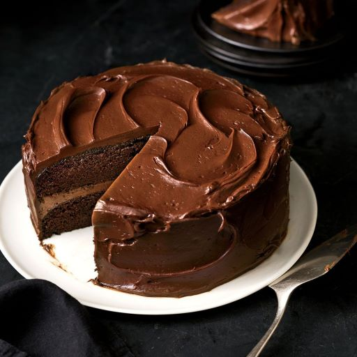

Chocolate Cake

Description
No need to reach for a box cake mix anymore when there's a super-easy, no-fuss, no-baking-skills-required, rich, and chocolatey chocolate cake that anyone can bake from scratch. Even Nicole McLaughlin, aka NicoleMcmom, who says she's not much of a baker, was able to nail this recipe like it's no big deal. If she can do it, you can do it.
Ingredients
- 2 cups white sugar
- 1 ¾ cup all-purpose flour
- ¾ cup unsweetened cocoa powder
- 1 ½ teaspoons baking powder
- 1 ½ teaspoons baking soda
- 1 teaspoon salt
- 2 eggs
- 1 cup milk
- ½ cup vegetable oil
- 2 teaspoons vanilla extract
- 1 cup boiling water
Steps
- Preheat the oven to 350 degrees F (175 degrees C). Grease and flour two nine-inch round pans. OR line a half sheet pan with parchment paper and spray with cooking spray if you want to bake a sheet cake.
- In a large bowl, stir together the sugar, flour, cocoa, baking powder, baking soda, and salt. Add the eggs, milk, oil, and vanilla. Mix for 2 minutes on medium speed of mixer. Stir in the boiling water last. The batter will be thin. Pour evenly into the prepared pans.
- Bake 30 to 35 minutes in the preheated oven until you can insert a toothpick into the cake, and remove it dry. OR if you're baking a sheet cake, bake for only 15 minutes. Cool in the pan(s) for 10 minutes, then remove to a wire rack to cool completely.